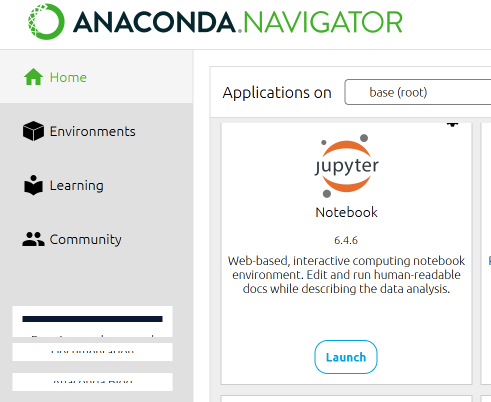

Uvod¶
Za skiptnu obradu i analizu podataka u Pajtonu nam je potrebno nešto matematičkog predznanja i tehničkih preduslova. Ništa od toga nije previše zahtevno. U ovoj svesci je dato uputstvo kako da prevaziđemo te početne teškoće.
Skriptna obrada podataka¶
Internet i društvene mreže su drastično podigli nivo količine podataka koji obrađujemo svaki dan. Dok je internet još bio samo za imejl i pretragu na Yahoo! svi podaci koje smo uopšte mogli da obrađujemo su bili na računaru. Tada je i Eksel (Microsoft Excel) bio više nego dovoljan za ljude čiji je posao da prikupljaju, obrađuju i predstavljaju podatke. Danas su speadsheet programi još mnogo bolji, ali i dalje imaju jednu kritičnu karakteristiku – svaka obrada podrazumeva da mi, pomoću miša i tastature, svaki put ponavljamo manje-više isti postupak. Možda vremenom postajemo brži i efikasniji, ali i dalje smo mi ljudi neophodni da se obradi novi fajl sa podacima.
Količina podataka sa kojom se danas susrećemo zahteva drugačiji pristup – da mašini prepustimo taj manuelni posao obrade podataka. To možemo da uradimo tako što napišemo jednostavan program (skriptu) koji isti postupak ponavlja tačno onoliko puta koliko mi to želimo. Takva analiza se naziva skriptnom analizom podataka. Nju možete da izvedete i pomoću makroa ili skripta u Ekselu, ali to, na duge staze, nije dobro rešenje jer smo i dalje ograničeni na Ekselov repertoar funkcija i tipova promenljivih. Pre ili kasnije ćemo morati da pređemo na “pravi” programski jezik i okruženje sa neograničenim mogućnostima za obradu i analizu podataka.
Dva programska jezika se danas prepoznaju kao veoma dobra rešenja za skriptnu analizu podataka: R i Pajton (Python). Mi ćemo u ovom praktikumu koristiti Pajton jer je pogodniji za korišćenje u Džupiter sveskama (Jupyter Notebook), interaktivnom okruženju u kom je napisan ceo ovaj praktikum.
Praktikum je namenjen svima koje interesuje kako da automatizuju obradu i analizu podataka. Poželjno je da korisnici imaju osnovno znanje iz oblasti statistike i programiranja, kao i rada sa Ekselom. Za korišćenje ovih svezaka nije potrebno aktivno programiranje, ali je poželjno da korisnici znaju kako se pišu programi, koja im je osnovna struktura, šta su promenljive i funkcije. Džupiter sveske mogu da se koriste bez dopisivanja bilo kakvog kôda, dovoljno je da budete u stanju da jedan argument funkcije zamenite drugim ili da varirate parametre.
Ovaj praktikum može da se koristi na dva načina: da čitate sadržaj svezaka gde sav kôd i grafikone posmatrate kao ilustracije ili da sveske koristite interaktivno tako što pokrećete kôd i eksperimentišete menjajući ga po malo. Preporučujemo da praktikum čitate u dve faze, prvo samo pročitate, a onda “zavrnete rukave” i probate da koristite sveske interaktivno.
Imajte u vidu da ovo nije udžbenik za obradu podataka ili nauku o podacima. Objašnjeni su samo neki koncepti potrebni za razumevanje navedenih primera skriptne obrade i analize podataka. Pošto je praktikum priređen kao hipertekst, većina važnih koncepata ima hiperlinkove ka definicijama ili objašnjenjima u drugoj literaturi dostupnoj onlajn. Takođe, za sve sveske postoje važne reference koje treba konsultovati za dalje i dublje učenje ili primene.
Jedan od većih problema u kulturi rada sa podacima i njihovog korišćenja je loša komunikacija rezultata. Iako se menažeri uspešnih kompanija uvek slažu da je donošenje odluka zasnovanih na podacima neophodno, retko ko od njih direktno koristi podatke. Mnogo je češći slučaj da čitaju kratke izveštaje koji uglavnom podržavaju već utvrđen stav. Razlog za to je da podaci nikada ne govore sami za sebe. Oni su dosadno i teško razumljivo štivo ukoliko su lišeni konteksta i dobrog narativa. Današnjim analitičarima nisu dovoljni statistika i domensko znanje, oni moraju da vladaju veštinom atraktivnog pripovedanja sa podacima. Publiku privlače zanimljive priče. Ukoliko su one bazirane na pravim podacima, komunikacija će biti bolja, uverljivija i svrsihodnija. Zbog toga su sve Džupiter sveske u ovom praktikumu zamišljene kao priče o nekim podacima.
O Džupiter sveskama¶
Džupiter sveske (Jupyter Notebook) su open-source aplikacija koja omogućava da pravimo i delimo dokumente koji sadrže programski kôd sa pratećim tekstom, jednačinama i vizuelizacijama. Ova aplikacija radi u Džupiter okruženju, odnosno na Džupiter serveru koji može biti podignut lokalno na vašem računaru ili dostupan kao onlajn servis. Iako je Džupiter zamišljen kao platforma za tri jezika (Julia, Python i R), najveći broj svezaka je urađen u Pajtonu. Za Džupiter sveske ne postoji poseban editor, one se edituju i pokreću iz veb-brauzera.
Ovde se nećemo upuštati u detalje rada sa Džupiter sveskama. Ako samo čitate sadržaj, nikakvo uputstvo vam nije potrebno. Kada radite interaktivno, najvažnije je da primetite da se sveska sastoji iz “In” (input) i “Out” (output) polja. U input polja mi unosimo instrukcije ili prateći tekst. U output poljima je izlaz koji generiše mašina. Kada unesmo kôd u input polje, izvršavamo ga tako što istovremeno pritiskamo Ctrl i Enter na tastaturi. Tada se u polju ispod pojavljuje rezultat. Kada izvršimo instrukcije date u nekom “In” polju, broj u uglastim zagradama pored oba polja se povećava za jedan. Pošto instrukcije ne moraju da se izvršavaju redom kojim su ispisane na ekranu, numeracija nam govori kojim su redom izvršavane.

O Pajtonu¶
U ovom praktikumu nećemo davati uputstvo za rad u Pajtonu. Čitajući ove Džupiter sveske videćete da mnogo toga u Pajtonu može da se uradi sa svega par linija koda. Zato verujemo da je primena Pajtona za obradu i analizu podataka moguća i bez posebnog znanja programiranja. Pajton je programski jezik opšte namene koji ima mnoštvo svojih specifičnosti. Mi, međutim, ne planiramo da pišemo softver od hiljadu linija kôda niti da pravimo nove biblioteke. Ideja je da koristimo prednosti interpretera koji dozvoljava da podatke obrađujemo korak po korak kao iz komandne linije. Sintaksa Pajtona je, srećom kao i kod većine jezika interpretera, jednostavna.
Sam Pajton, u svojoj osnovnoj verziji, nema dovoljno funkcija za rad sa podacima. Zato je potrebno da koristimo specifične biblioteke koje imaju za to namenjene funkcije. To je takođe jednostavno i vrlo brzo ćete videti da skoro uvek koristimo iste 2-3 biblioteke. Zaista mislimo da niko ne treba da uzima kurs programiranja u Pajtonu kako bi mogao da ga koristi za (ne previše složenu) obradu i analizu podataka.
Ukoliko procenite da vam je potreban postupniji i lakši pristup Pajtonu, možete da pogledate onlajn kurs Fondacije Petlja na ovu temu [1].
Kako da pokrenete interaktivnu verziju Džupiter sveski¶
Za interaktivni rad sa Džupiter sveskama potrebno je da otvorite odgovarajuće .ipynb fajlove. Te fajlove može da čita samo aplikacija Jupyter Notebook koja može da bude ili servis na internetu ili aplikacija instalirana na vašem računaru.
Najjednostavniji način da otvorite .ipynb fajlove jeste da ih postavite u neki onlajn Git repozitorijum (npr. GitHub) i da onda link na sveske, odnosno te fajlove unesete u odgovarajuće polje portala Binder i kliknete na “launch”. Ovaj servis će otvoriti interaktivnu verziju na kojoj ćete moći da radite dok ste onlajn. Binder vam neće trajno sačuvati ono što radite, ali možete uvek ponovo na mu pristupite.
Drugi način da pokrenete .ipynb fajlove je da koristite neki od od servisa na kojima je potrebno da otvorite nalog (a možda i da platite korišćenje) poput Google Colab ili CoCalc. Ovo je rešenje, pre svega, za profesionalce koji ne žele samo onlajn servis već i platformu za saradnju sa drugim programerima.
Treći način je da podignete server za Džupiter sveske na svom računaru. Srećom, to nije tako komplikovano kao što zvuči. Potrebno je da preuzmete sa interneta instalaciju programskog okruženja Anaconda i da je instalirate. Izaberite verziju za Pajton 3.8 i vaš operativni sistem. Imajte u vidu da je ova instalacija velika i zahtevna u pogledu memorije. Kad pokrenete okruženje Anaconda dobićete mogućnost da izaberete neku od ponuđenih aplikacija. Izaberite Jupyter Notebook. Tada će vaš brauzer otvoriti Pajtonov radni direktorijum. Postarajte se da u taj direktorijum unesete potrebne Džupiter sveske, odnosno .ipynb fajlove. Biće dovoljno da kliknete na ime fajla i on će se u novom tabu brauzera otvoriti kao interaktivna sveska.

Kada završimo sa tehničkim podešavanjima, bićemo spremni da se pozabavimo suštinom, tj. obradom i analizom podataka u Pajtonu.
Preporučena literatura¶
Машуловић Драган. 2019. Анализа и презентација података у Џупајтеру
VanderPlas Jake. 2016. Python Data Science Handbook: Essential Tools for Working with Data
Stojiljković Mirko. 2018. Linear Regression in Python